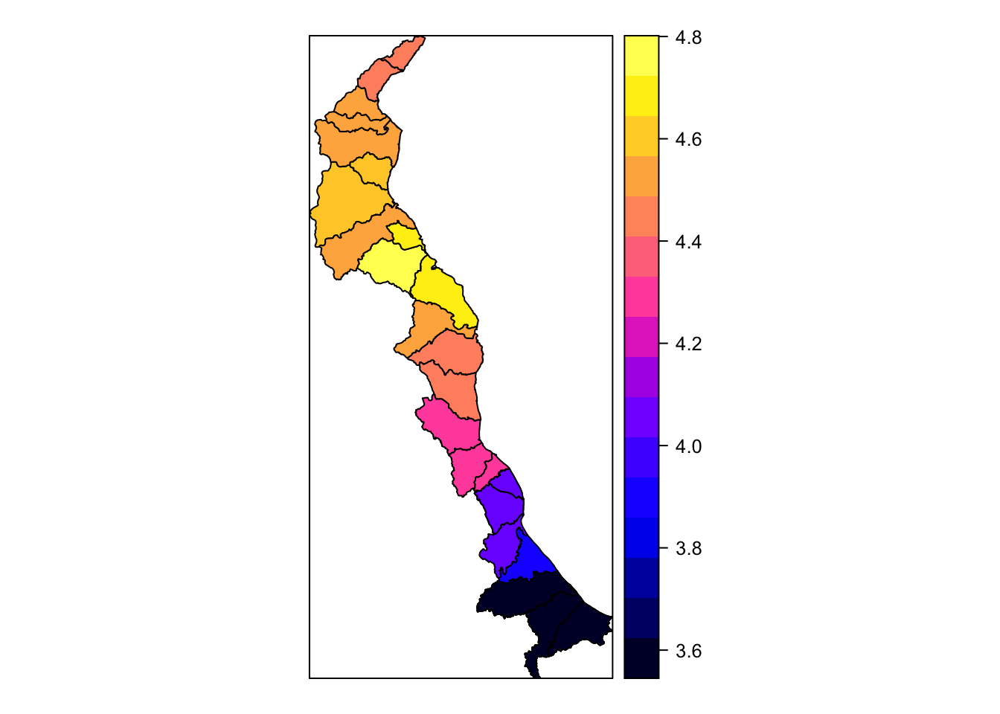

13 Shapefiles
Shapefiles are polygons containing geolocated data. R is great at handling shapefiles and is often faster and more efficient in visualizing these than other programs like ArcGIS. For shapefiles, we will use a combination of new packages. Most notably, we’ll be using rgdal, a package designed to work with geolocated datasets with any projection, and sp (spatial points), the sister package of sf. These two packages are useful for reading and curating shapefiles. Data derived from these two packages can also work with mulitiple visualization packages including ggplot2.
13.1 Reading in Shapefiles
Often times, the spatial data that we want aren’t in a nice, gridded lat/lon. The oblate spheroid that we call home presents some challenges when it comes to displaying spatial datasets. Often times, datasets like these are stored as separate entities - shapefiles & data tables. Fortunately, we have multiple avenues for working with this data. For this tutorial, we’re going to use data from the University of Delaware coastal flooding dashboard - a emergency warning product for the coastal communities of Delaware.
The data is located in the datasets folder under the folder titled cfms_shapefiles/. The file we need to read in from this group is cfms_watersheds.shp, however, we need all files from this folder to stick together. In other words, all files must reside in the same folder together on your local machine. In any program, when you read in a shapefile (.shp), the program automatically references the .shx, .prj, .dbf, etc. files as well.
#Load packages
library(RColorBrewer)
library(rgdal)
library(sp)
library(ggplot2)
library(ggmap)## Google's Terms of Service: https://cloud.google.com/maps-platform/terms/.## Please cite ggmap if you use it! See citation("ggmap") for details.library(scales)
library(viridis)## Loading required package: viridisLite##
## Attaching package: 'viridis'## The following object is masked from 'package:scales':
##
## viridis_pallibrary(raster)
# Use the readOGR function from the rgdal package to open a shapefile & constituents
coast.shp <- readOGR("/Users/james/Documents/Github/geog473-673/datasets/cfms_shapefiles/cfms_watersheds.shp")## OGR data source with driver: ESRI Shapefile
## Source: "/Users/james/Documents/Github/geog473-673/datasets/cfms_shapefiles/cfms_watersheds.shp", layer: "cfms_watersheds"
## with 24 features
## It has 15 fieldsclass(coast.shp)## [1] "SpatialPolygonsDataFrame"
## attr(,"package")
## [1] "sp"coast.shp@proj4string## CRS arguments:
## +proj=tmerc +lat_0=38 +lon_0=-75.4166666666667 +k=0.999995 +x_0=200000
## +y_0=0 +datum=NAD83 +units=m +no_defsWe use readOGR from the rgdal package to load in the shapefile. As stated above, even though we only key the loading of the cfms_watersheds.shp file, readOGR is also opening the other files (.shx, .prj, .dbf, etc.) as well. This projection is unique. It’s a transverse mercator with some specific lat_0 and lon_0 starting points. Notice the class of the shapefile - the underlying package controlling it’s translation to R is the sp package. The sp package provides classes and methods for the points, lines, polygons, and grids of this shapefile. Notice the *@* symbol in coast.shp@proj4string. This is how we query metadata associated with shapefiles.
13.2 Combining Shapefiles with Data
We have a data file that contains flooding data for the polygons of the shapefile read in above. This data file is water_levels.csv. Let’s read this data in.
plot(coast.shp)# Open the dataset that corresponds to the water levels within the shapefile boxes
coast.data <- read.csv("/Users/james/Documents/Github/geog473-673/datasets/cfms_shapefiles/water_levels.csv")
head(coast.data)## station lon lat mhhwtomsl navd88tomsl mllwtomsl mhhw mllw
## 1 DBOFS001 -75.14990 38.79219 2.488845 0.3779528 -2.1168 2.110892 -2.4948
## 2 DBOFS001 -75.14990 38.79219 2.488845 0.3779528 -2.1168 2.110892 -2.4948
## 3 DBOFS001 -75.14990 38.79219 2.488845 0.3779528 -2.1168 2.110892 -2.4948
## 4 DBOFS002 -75.30239 38.94447 2.752297 0.2916667 -2.3451 2.460630 -2.6368
## 5 DBOFS003 -75.30879 38.95471 2.771982 0.2877297 -2.3543 2.484252 -2.6421
## 6 DBOFS003 -75.30879 38.95471 2.771982 0.2877297 -2.3543 2.484252 -2.6421
## maxpred maxovermhhw
## 1 3.622047 1.510047
## 2 3.622047 1.510047
## 3 3.622047 1.510047
## 4 4.048557 1.587557
## 5 4.048557 1.564557
## 6 4.048557 1.564557The data is loaded, but how to we correspond the data of the csv file with the appropriate polygon within the shp file? We must find a matching key. In this case, the key is the station. Both the coast.shp and coast.data datasets contain the station variable. Now, we must merge together the flooding data with the station within each polygon.
# now let's find the matching key - in this case, the matching key is the "station".
as.vector(coast.shp$station[1:5])## [1] "DBOFS015" "DBOFS016" "DBOFS003" "DBOFS012" "DBOFS013"as.vector(coast.data$station[1:5])## [1] "DBOFS001" "DBOFS001" "DBOFS001" "DBOFS002" "DBOFS003"station is the matching column, but the stations are not in the same order. We must reorder them appropriately before we merge together the datasets.
# notice the difference above - let's reorder the data from the shapefile and the csv data by the station, otherwise merging will NOT work.
coast.shp = coast.shp[order(as.vector(coast.shp$station)),]
coast.data = coast.data[order(as.vector(coast.data$station)),]
as.vector(coast.shp$station[1:5])## [1] "DBOFS001" "DBOFS001" "DBOFS001" "DBOFS002" "DBOFS003"as.vector(coast.data$station[1:5])## [1] "DBOFS001" "DBOFS001" "DBOFS001" "DBOFS002" "DBOFS003"Now that the order of the stations are the same, we can merge together the two datasets. We will merge together the datasets using the merge function from sp. Here, we denote the use of this function by sp::merge. Why? There are multiple merge functions in R, and we need to tell R which package contains the specific merge function we wish to use. The function is straight-forward, but one argument that you may notice is the duplicateGeoms = TRUE argument. We need to specify this because we have multiple data values for the same station name. For example, there are multiple DBOFS001 stations above.
# merge together the shapefile data and the csv data based on common variable, here called 'station' - we MUST use the duplicateGeoms argument because there are multiple values for the same station name
merged.coast = sp::merge(coast.shp,coast.data,by='station', duplicateGeoms = TRUE)
class(merged.coast)## [1] "SpatialPolygonsDataFrame"
## attr(,"package")
## [1] "sp"We have merged together the data for each station and thus each polygon now has data associated with it. There’s 24 variables here and station is the only variable we’ve covered so far. The variable that contains the data we’re interested in here is called maxpred, which is the maximum predicted water level in feet above sea level for the next 24 hours for each station. Before we color the polygons based on this maxpred variable, we need to create a color palette using RColorBrewer.
# Now let's use brewer.pal from RColorBrewer to create a blues color pallette
mycolours <- brewer.pal(8, "Blues")13.3 Visualizing the Shapefiles & Data
The color scheme has been prepared with the appropriate breaks that we wanted. Now, we can plot the dataset and color the shapefile polygons. There are multiple ways to plot this data and we’ll begin with a simple spplot from the sp package.
# first we'll plot a simple one to show this function
spplot(obj = merged.coast, zcol = "maxpred")
# now let's add in extra arguments and color our polygons with our colorshcmee
spplot(obj = merged.coast, zcol = "maxpred", par.settings = list(axis.line = list(col ="transparent")), main = "Projected Water Levels (Feet)", cuts = 5, col ="transparent", col.regions = mycolours)Simple and displays the data easily. Now we turn our attention to the tamp package - Thematic Map Visualization. Thematic maps are geographical maps in which spatial data distributions are visualized. This package offers a flexible, layer-based, and easy to use approach to create thematic maps, such as choropleths and bubble maps. It is based on the grammar of graphics, and resembles the syntax of ggplot2.
library(tmap)
tm_shape(merged.coast) +
tm_polygons(col='maxpred', title = "Projected Water Levels", palette = "Blues") + tm_style("classic") + tm_scale_bar(position = c("left", "bottom")) ## Warning in sp::proj4string(obj): CRS object has comment, which is lost in outputWe automatically queried a Blues color palette with automatic breaks with the tm_shape and tm_polygons functions. Notice how similar this functionality is to ggplot2. What if we want to specify a bounding box or “zoom in” ? The default bounding box is the extent of the original dataset. Let’s look at the extent using the raster package’s function, extent().
extent(merged.coast)## class : Extent
## xmin : 170917
## xmax : 224900.7
## ymin : 75865.21
## ymax : 190353.1Remember, we are NOT in a lat/lon coordinate system. These values are not in units of degrees lat/lon, but rather meters from equator/meridian. Thus, our bounding box must be specified with these coordinates in mind.
library(tmap)
tm_shape(merged.coast, bbox=c(xmin=170917, xmax=224900.7 , ymin=75865.21 , ymax=190353.1)) +
tm_polygons(col='maxpred', title = "Projected Water Levels", palette = "Blues") + tm_style("classic") + tm_scale_bar(position = c("left", "bottom")) ## Warning in sp::proj4string(obj): CRS object has comment, which is lost in output## Bounding box format automatically changed from [xmin, xmax, ymin, ymax] to [xmin, ymin, xmax, ymax]If our projection was a lat/lon projection in units of degrees, we could just plug in degrees lat/lon into our bbox argument.
Let’s turn our attention to ggplot2 at this time. Before we use this package, we will need to convert our SpatialPolygonsDataFrame to a sf dataframe. For this, we can use the st_as_sf function which converts a foreign object to an sf object.
library(sf)
# convert it to an sf object
gg_merged = st_as_sf(merged.coast)
class(gg_merged)## [1] "sf" "data.frame"# now we use geom_sf since our gg_merged is now a simple feature
ggplot() + geom_sf(data = gg_merged, aes(fill = maxpred))
Let’s get rid of the default gray background of this ggplot instance. This default background is actually part of the default ggplot theme. There are multiple themes we can use including theme_bw(), theme_dark(), theme_light(), theme_void() and more.
Each of these themes are useful under varying circumstances. The void theme is nice when we want to bring more visual focus to the data. However, this map would look better if we added in state polygons.
# read in the states shapefile from the course datasets folder
states <- readOGR("/Users/james/Documents/Github/geog473-673/datasets/ne_10m_admin_1_states_provinces/ne_10m_admin_1_states_provinces.shp")## OGR data source with driver: ESRI Shapefile
## Source: "/Users/james/Documents/Github/geog473-673/datasets/ne_10m_admin_1_states_provinces/ne_10m_admin_1_states_provinces.shp", layer: "ne_10m_admin_1_states_provinces"
## with 4594 features
## It has 83 fields
## Integer64 fields read as strings: ne_idclass(states)## [1] "SpatialPolygonsDataFrame"
## attr(,"package")
## [1] "sp"states = st_as_sf(states)
class(states)## [1] "sf" "data.frame"ggplot(data = states) + geom_sf() + theme_void() +
geom_sf(data = gg_merged, aes(fill = maxpred)) +
coord_sf(xlim = c(-76.1, -74.7), ylim = c(38.3,40), expand = FALSE) +
scale_fill_distiller(palette = "Blues", direction= 1)
Looks pretty good even though the shapefile isn’t quite as sharp as we’d like. Besides the shapefile which we added to the plot via geom_sf(), take notice of the theme_void()…this plot will NOT WORK without theme_void(). There is ongoing github discussions with some of the developers at ggplot2 to figure out why, but for now just make sure you use theme_void to add shapefiles to the same plot in R and have them work properly. Also take note of the scale_fill_distiller function. This is an easy way to throw in a RColorbrewer color pallette. In this case we used the Blues colorpallete since we’re dealing with water but you can make it any RColorbrewer palette you want. Also notice the direction=1. This reverses the order of the blues color pallette. Instead of the scale_fill_distiller function, you can also use scale_fill_viridis() function which has some default pallettes such as - “magma”, “plasma”, and “inferno”.
The last package we’ll introduce for visualizing shapefiles is the mapview package. This package overlays shapefiles and corresponding data over an HTML based interactive map. This package handles a lot of the dirty work for us.
library(mapview)## GDAL version >= 3.1.0 | setting mapviewOptions(fgb = TRUE)mapview(merged.coast['maxpred'], col.regions = mycolours)## Warning: Found less unique colors (8) than unique zcol values (19)!
## Interpolating color vector to match number of zcol values.13.4 Saving a shapefile
So we combined our csv station data with the corresponding shapefile statoin to make these plots. We don’t need to duplicate that hard work again because we can actually save our merged shapefile/csv as an ENVI shapefile using the writeOGR function from rgdal.
writeOGR(obj = merged.coast, dsn = "/Users/james/Downloads/coast_files/merged.coast", layer = "coast-rgdal", driver = "ESRI Shapefile")13.5 Assignment
Recreate the 3 plots below using:
tmapggplot2mapview
Using the ne_10m_parks_and_protected_lands shapefile dataset, map the names of the protected lands. The file you’ll need is called ne_10m_parks_and_protected_lands_area.shp and the variable you’ll want to plot is called name. Plot this in the Pacific Northwest using the methods listed below. You will need to download all of the contents of the ne_10m_parks_and_protected_lands shapefile folder. Below, a bounding lat/lon box of -127 W, -110 E, 40 S, 50 N was used for tmap plot and ggplot plot. You may use a bounding box of your choice where you see fit.
The plots don’t have to be exact, but get as close as you can. Submit your plots to UD Canvas.
Hint - here’s how I read in the dataset:
m <- readOGR("/Users/james/Documents/Github/geog473-673/datasets/ne_10m_parks_and_protected_lands/ne_10m_parks_and_protected_lands_area.shp")
## OGR data source with driver: ESRI Shapefile
## Source: "/Users/james/Documents/Github/geog473-673/datasets/ne_10m_parks_and_protected_lands/ne_10m_parks_and_protected_lands_area.shp", layer: "ne_10m_parks_and_protected_lands_area"
## with 61 features
## It has 8 fields
## Integer64 fields read as strings: scalerank
## OGR data source with driver: ESRI Shapefile
## Source: "/Users/james/Documents/Github/geog473-673/datasets/ne_10m_admin_1_states_provinces/ne_10m_admin_1_states_provinces.shp", layer: "ne_10m_admin_1_states_provinces"
## with 4594 features
## It has 83 fields
## Integer64 fields read as strings: ne_id## [1] "SpatialPolygonsDataFrame"
## attr(,"package")
## [1] "sp"## [1] "sf" "data.frame"